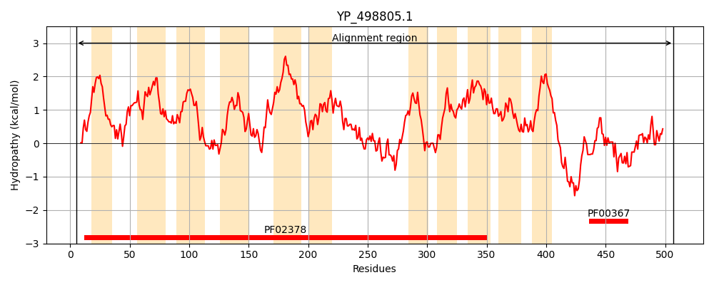
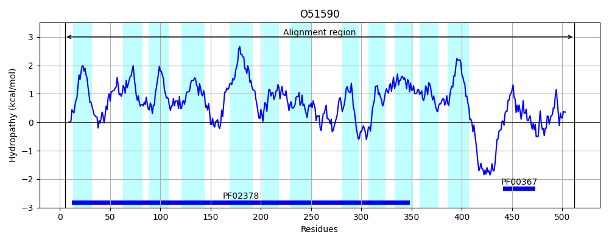
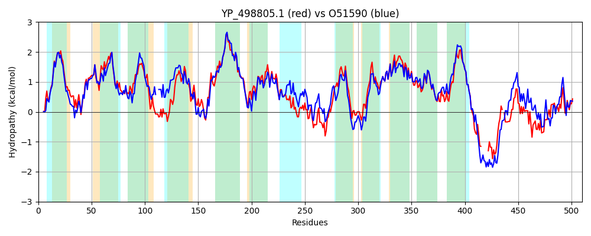

Hit Accession: O51590
Hit TCID: 4.A.1.1.18
Hit Description: gnl|BL_ORD_ID|7296 gnl|TC-DB|O51590|4.A.1.1.18 Pts system, iibc components OS=Borrelia burgdorferi (strain ATCC 35210 / B31 / CIP 102532 / DSM 4680) GN=BB_0645 PE=4 SV=1
Mach Len: 510
e:0.000000
Query TMS Count : 11
Hit TMS Count: 12
TMS-Overlap Score: 9.900000
Predicted Substrates:CHEBI:5418;glucose
BLAST Alignment:
Score: 1659 , Bit scores: 643 bits, E-value: 0.0e+00, Alignment length: 510, Percentage identity: 62
Query: 5 FEKAQQFGKSFMLPIAILPAAGLLLGIGGALSNPNTVKAYPILDITLLQNIFTLMSAAGSIVFQNLPVIFAIGVAIGLSRSDKGTAGLAALLGFLIMNATMNGLLTITGTLAKDQLAQNGQGMVLGIQTVETGVFGGIITGIMTAILHNKYHKVVLPPYLGFFGGSRFVPIVTAFAAIFLGVLMFFIWPSIQAGIYHVGGFVTKTGAIGTFVYGFILRLLGPLGLHHIFYLPFWQTALGGTLEVKGHLVQGTQNIFFAQLGDPDVTKYYSGVSRFMSGRFITMMFGLCGAALAIYHTAKPEHKKVVGGLMLSAALTSFLTGITEPLEFSFLFVAPILYVIHAFFDGLAFMMADIFNITIGQTFSGGFIDFLLFGVLQGNSKTNYLYVIPIGIVWFCLYYIVFRFLITKFNFKTPGR------EDKAAAQQVEATER-AQTIVAGLGGKDNIEIVDCCATRLRVTLHQNDKVDKVLLESTGAKGVIQQGTGVQVIYGPHVTVIKNEIEELL 507
FE+AQ+FG+SFMLPIAILPAAGLLLGIGG+LSNP TV+ Y L+I LQ++F +MSA+GSI+F NL IF+IG+A+GL++SDKGT+G+AA +G+L+MNAT+ L+ ++G + + G VLGI+T+ETGVFGG++ GI+T LH++++KV LP LGFF GSRFVPI+ +F++IFL V+MF +WP +Q+GI VGG V TG IGT +YG LR+LGP GLHHIFYLPFW T LGG++ + G L++GTQNIFFA+L +++ G SRFMSGRFITMMFGL GAALA+Y+TAK E + V GL++S+ALTSFLTGITEPLEFSFLFVAPILYV+HA FDG AFM+A I ITIGQTFSGGF+DF+LFG+LQGNS+TN+L V IGIVWF LYY F FLI KF+FKTPGR ED +++ E E A ++ GLGG NI +DCCATRLR+T+ KV + +L+ TG+KGVI +G GVQV+YGP V+V+KNEIEELL
Sbjct: 5 FEQAQKFGRSFMLPIAILPAAGLLLGIGGSLSNPETVRTYSFLNIFFLQSVFKIMSASGSIIFSNLAPIFSIGIAVGLAKSDKGTSGIAAFIGYLVMNATIGVLIDVSGRA--ESFSSGAVGFVLGIKTLETGVFGGVVVGILTYYLHSRFNKVDLPKVLGFFSGSRFVPIIVSFSSIFLAVIMFLVWPFVQSGINKVGGLVDSTGYIGTLIYGIFLRMLGPFGLHHIFYLPFWTTGLGGSVIIDGKLIEGTQNIFFAELAAQGTDRFFIGTSRFMSGRFITMMFGLPGAALALYYTAKREERTKVFGLLMSSALTSFLTGITEPLEFSFLFVAPILYVVHATFDGFAFMLAHILQITIGQTFSGGFVDFILFGILQGNSRTNWLLVPVIGIVWFFLYYFTFIFLINKFDFKTPGRTQDLNSEDSPSSKSSEFEENYATKVIIGLGGASNIVELDCCATRLRITVRDVLKVSEKILKKTGSKGVIIKGNGVQVVYGPGVSVLKNEIEELL 512 | Protein Hydropathy Plots: |
|---|
|  |  |
Pairwise Alignment-Hydropathy Plot:
|
|---|
|  |